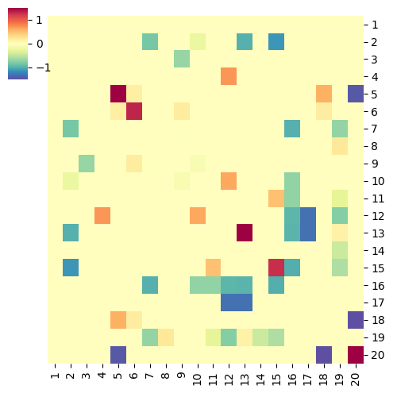
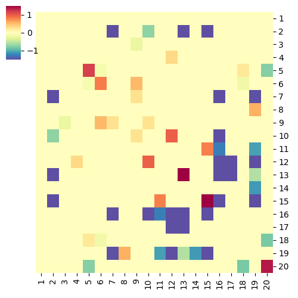

do.pearson.2.good.apr17
import math
import sys
import re
import os
import numpy as np
import matplotlib as mpl
import matplotlib.pyplot as plt
import scipy
import scipy.stats
from scipy.stats import zscore
import phenograph
from operator import itemgetter
import pandas as pd
import seaborn as sns
def get_unique_clusters(n):
m = []
f = open(n)
for l in f:
l = l.rstrip("\n")
m.append(l)
f.close()
return m
def read(n, choice):
f = open(n)
mat = np.zeros((20, 20), dtype="float32")
good_proteins = get_unique_clusters("uniq.clusters")
'''
good_proteins = ["1 Ki67 S100A8", "2 Ly6G CD62L CD127 B220 CD244.2 FoxP3 CD163 CD8a CD68", \
"3 S100A9 S100A8", "4 S100A9", "5 CD127 CD44 CD68", "6 CD11c Ly6C CD86", \
"7 PD-L1", "8 Vimentin CD11c CD11b", "9 CD4 B220 CD244.2 CD8a Ly6G FoxP3 CD163 CD62L", \
"10 Ki67", "11 PD-1", "12 CD11c B220 F480 CD86", "13 S100A8 S100A9", \
"14 PD-1", "15 F480 CD86", "16 Ki67 F480", "17 Pan-CK CD4 Vimentin", "18 CD11c Pan-CK CD244.2", \
"19 CD44 Ly6C CD11b S100A8", "20 Pan-CK"]
'''
f.readline()
for l in f:
l = l.rstrip("\n")
ll = l.split("\t")
print(ll)
t_id = ll[0].split("--")
t0 = t_id[0]
t1 = t_id[1]
t0_id = int(t0.split()[0]) - 1
t1_id = int(t1.split()[0]) - 1
#mat[t0_id, t1_id] = float(ll[5])
#print(ll[0], ll[6])
#mat[t0_id, t1_id] = -1.0*np.log10(max(0.001, float(ll[-1])))
if float(ll[-1])>0.1:
continue
if choice=="AA":
val = float(ll[-3]) #AA
else:
val = float(ll[-2]) #EA
'''
if t0_id<=t1_id:
mat[t0_id, t1_id] = val
elif t1_id<=t0_id:
mat[t1_id, t0_id] = val
'''
mat[t0_id, t1_id] = val
mat[t1_id, t0_id] = mat[t0_id, t1_id]
f.close()
return mat, good_proteins
if __name__=="__main__":
choice = sys.argv[1] #AA or EA
mat, good_proteins = read("groups/pvalue.2", choice)
#print(mat)
#sys.exit(0)
nj_union = good_proteins
nj_union_title = []
for n in nj_union:
n_new = n.split(" ")[0]
nj_union_title.append(n_new)
nt = {}
for ind,ki in enumerate(good_proteins):
nx = []
for ind2, g in enumerate(nj_union):
#es = sum_values[protein_map[g], ind]
nx.append((ki, g, mat[ind, ind2], mat[ind, ind2]))
ki_new = ki.split(" ")[0]
nt[ki_new] = pd.Series([tx[2] for tx in nx], index=nj_union_title)
cg=sns.clustermap(pd.DataFrame(nt), row_cluster=False, col_cluster=False, \
figsize=(5, 5), method="average", \
vmax=1.5, vmin=-1.5, \
#vmax=2, vmin=-2, \
#col_ratios={"dendrogram":0.05}, \
#row_ratios={"dendrogram":0.05}, \
dendrogram_ratio=(0.1, 0.01), \
#cbar_pos=None,\
cmap="Spectral_r", \
#cmap="plasma_r", \
#cmap="viridis_r", \
#cmap="Reds", \
yticklabels=True, xticklabels=True)
plt.setp(cg.ax_heatmap.yaxis.get_majorticklabels(), rotation=0)
#plt.show()
#sys.exit(0)
#cg.fig.savefig("heatmap_%s.png" % (t_key))
#save_file = "heatmap_%s.png" % (sys.argv[1])
save_file = "heatmap_%scoef.png" % choice
#save_file = "heatmap_AAcoef.png"
cg.fig.savefig("%s" % save_file)
sys.exit(0)
Running Command
python3 do.pearson.2.good.apr17.py AA python3 do.pearson.2.good.apr17.py EAResults
 